About
Hunter x Hunter is baaaaack! finally! and they say Naruto is over :)
I'm a senior at MIT majoring in computer science and chemistry. I'm also a Costa Rican who loves dancing and partying, making friends and drinking, and stuff. I'm passionate about Latin American culture and Japanese culture as well. I used to participate in karate and chess competitions, and watch tons of anime, but now I just chill.
I deeply care about the daily struggles in the developing world (where the real stuff is happening). I want to get more involved in building technologies for the developing world in the near future.
Since I was in elementary school, I was immersed in the exciting world of academic olympiads. I participated and earned medals in several regional and international math, physics, chemistry and geography olympiads, and eventually I also became a tutor and trained fellow students for some years. I enrolled in college as a Chemistry major at the University of Costa Rica, and did a lot of research and crazy chemistry experiments. Two years later I was admitted at MIT as a transfer student, where I decided to pursue a Computer Science major as well. At MIT, it's been more than two years of participating in projects, competitions and hackathons, and programming in a bunch of different languages. During the past two summers, I enrolled in internships at Disney and Toshiba in Japan, where I worked building mobile apps and performing mobile network simulations.
Buaaaaaaaa.
Quiero regresar a tiquicia, construirme un rancho con hamacas a la par de la playa (con buen internet eso sí) y quedarme ahí tirado para siempre, trabajando o no.
Me estoy rascando la panza.
I have a crush.
Currently job hunting!! Technical interviews, job offers, come to me!
Contact me at rafaroar@mit.edu
Education
Massachusetts Institute of Technology, MIT
Class of 2015. Bachelors Degree. Majoring in Computer Science and Chemistry. Minoring in Japanese and Applied International Studies
Universitaet Hamburg
Visiting Student, Department of Chemistry
Universidad de Costa Rica, UCR
Majoring in Chemistry, Physics and Mathematics
Universidad de Nacional de Costa Rica, UNA
Majoring in Industrial Chemistry
Universidad Estatal a Distancia, UNED
Majoring in Business Administration and Management
Colegio Científico de Costa Rica, Sede de Occidente, CCCSR
My lovely high school <3
Experience
Software Engineering Intern, Toshiba Corporation
Developing and testing protocols for reliable mobile peer-to-peer multicast
Laboratory Assistant, Massachusetts Institute of Technology, MIT
Helped students enrolled in Introduction to EECS (6.01) and Computation Structures (6.004)
Android Developer, MIT Media Lab
Built an Android game called Hippomonsters with the Information Ecology Group for the local content sharing platform ShAir
Android Development Intern, Disney Interactive Group Japan
Developed a caring game called My Dear Stitch for Disney mobile handsets
Undergraduate Researcher, Massachusetts Institute of Technology, MIT
Synthesized and characterized Metal-Organic Frameworks (MOFs) and metal clusters at the Dinca Lab
Undergraduate Researcher, Centro de Electroquímica y Energía Química, CELEQ
Analyzed silicon surfaces modified with copper and manganese clusters using a variety of electrochemical and surface characterization techniques
Undergraduate Researcher, Universidad de Costa Rica, UCR
Synthesized and characterized organic ligands and metallic complexes for magnetic coupling analysis
Tutor, Olimpiada Costarricense de Matemática, OLCOMA
Helped students competing in regional and international math competitions
Tutor, Olimpiada Costarricense de Química, OLCOQUIM
Helped students competing in regional and international chemistry competitions
Projects
iOS game - Solar Sprint
Team project for 6.670, the MIT iOS game development competition. It's a game about a spaceship orbiting planets and traversing galaxies in order to collect all the star pieces scattered throughout the universe. It will be released in the App Store soon
iOS game - Bugs on Despair
My first iOS project built for 6.670. It's a simple game about protecting little insects from voracious carnivorous plants
web - Chat x Chat
My first web project. It's a simple chat built for 6.470, the MIT web programming competition. Register and check it out at rafaroar.scripts.mit.edu
Main Honors & Awards
First place - MIT iOS Game Development Competition, 2014
Gold medal - 42nd International Chemistry Olympiad, IChO, 2010
Bronze medal - 50th International Mathematical Olympiad, IMO, 2009
Honorable mention - 49th International Mathematical Olympiad, IMO, 2008
Silver medal - 21st Asian Pacific Mathematical Olympiad, APMO, 2009
Silver medal - 14th Iberoamerican Physics Olympiad, OIbF, 2009
Gold medal - 13th Iberoamerican Physics Olympiad, OIbF, 2008
Gold medal and special recognition - 13th Iberoamerican Chemistry Olympiad, OIAQ, 2008
Gold medal - 12th Iberoamerican Chemistry Olympiad, OIAQ, 2007
Gold medal - 11th Iberoamerican Chemistry Olympiad, OIAQ, 2006
Bronze medal - 10th Iberoamerican Chemistry Olympiad, OIAQ, 2005
Bronze medal - 7th Central America and the Caribbean Mathematical Olympiad, OMCC, 2004
Certificate of excellence - 4th International Geographic Olympiad, 2001
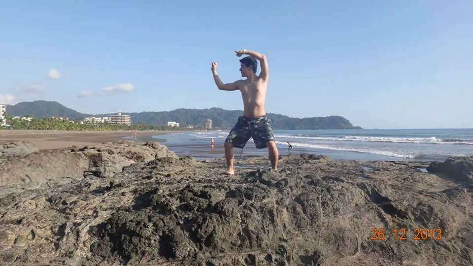
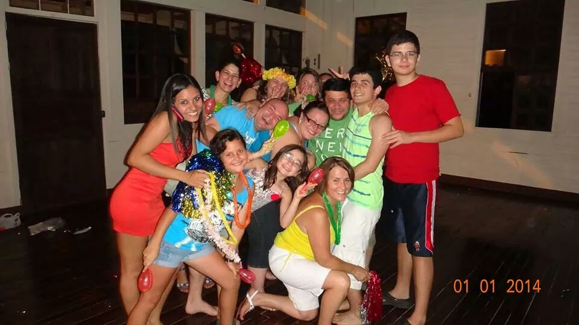
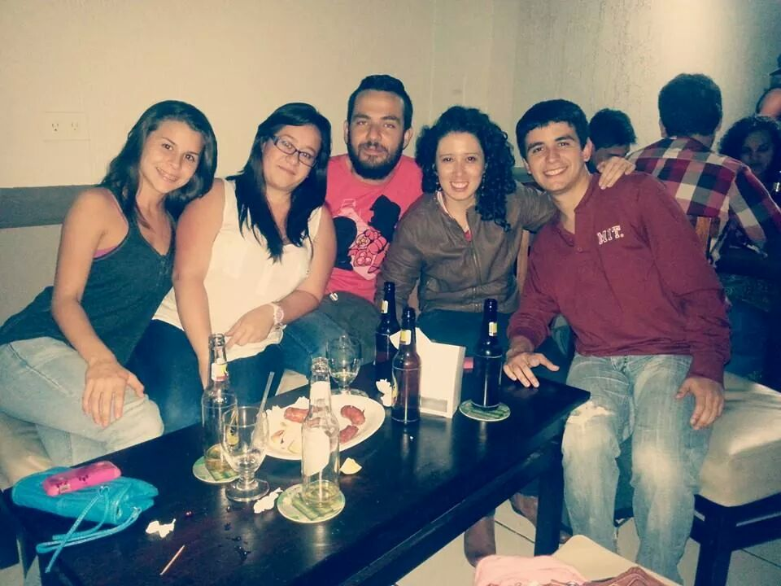
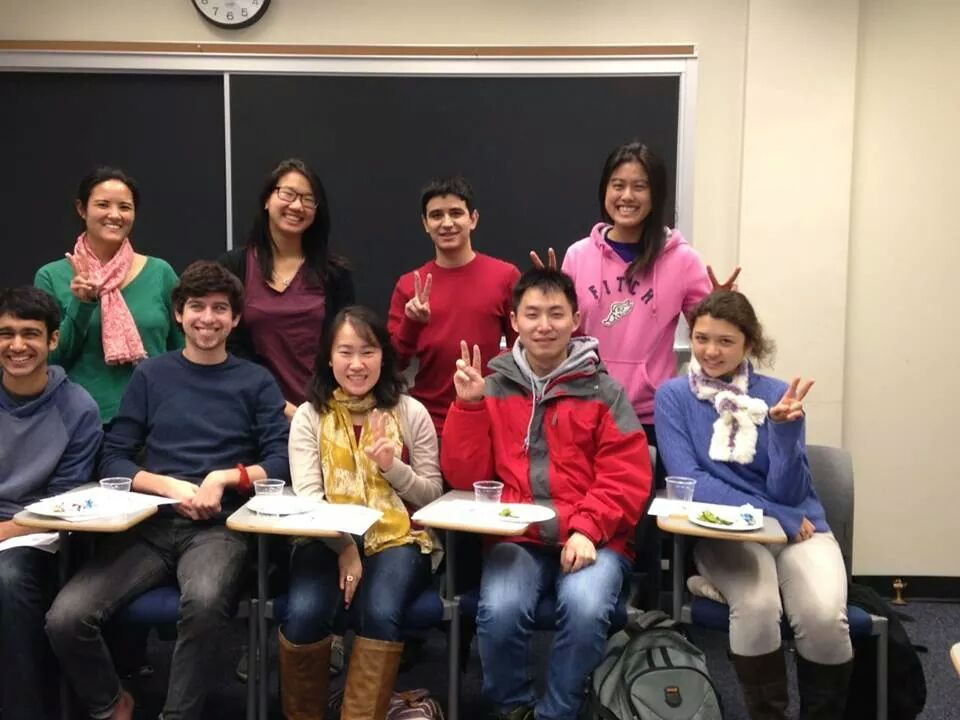
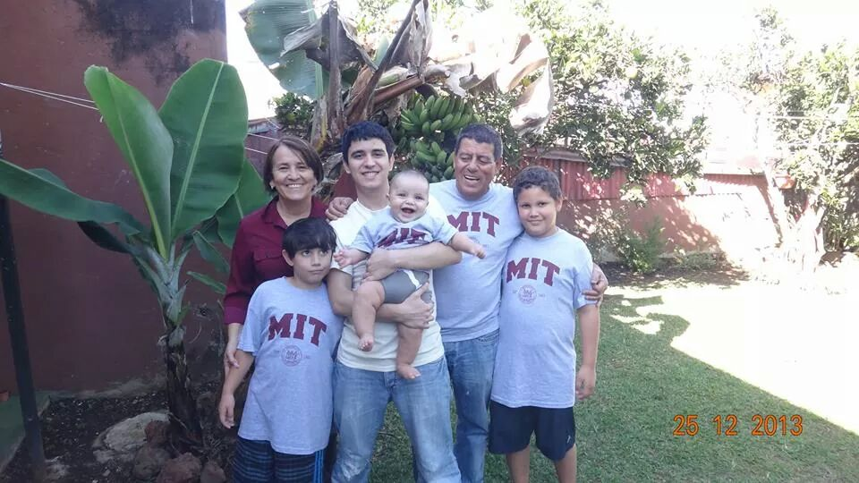
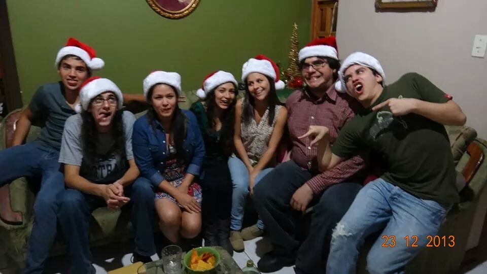
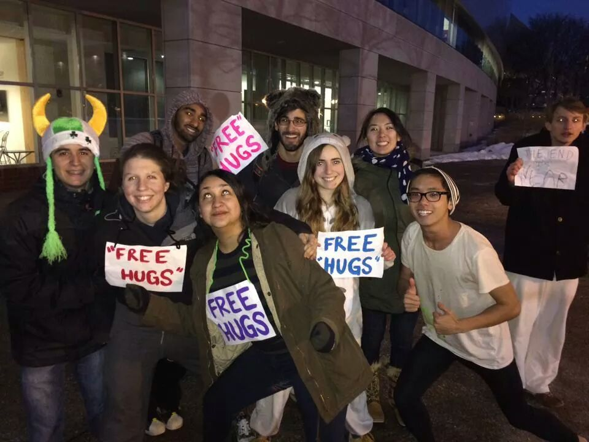
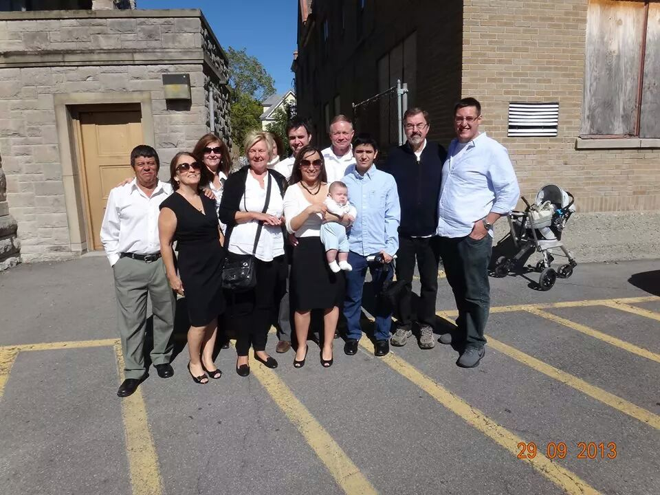
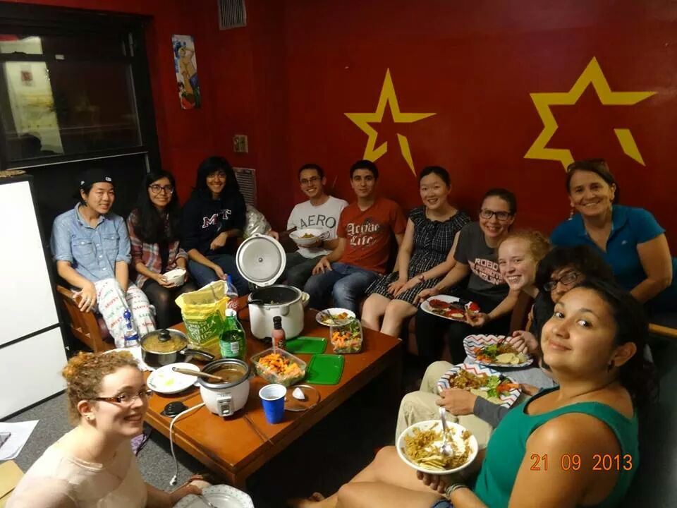
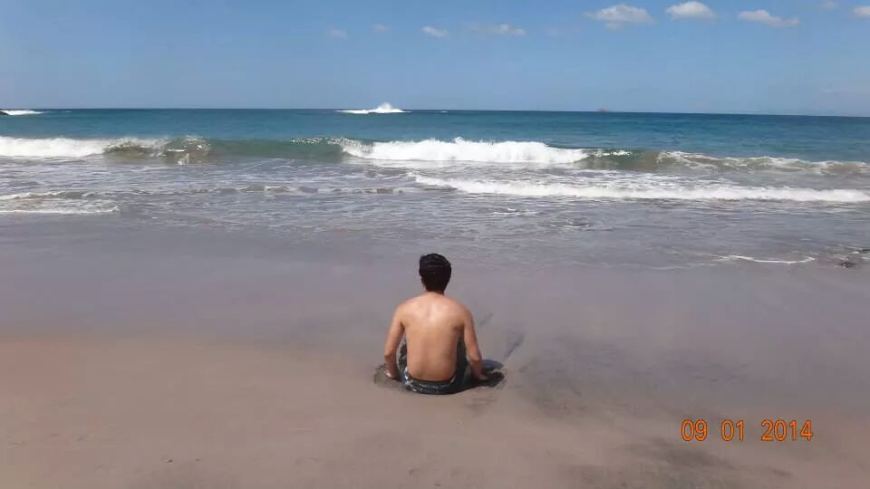
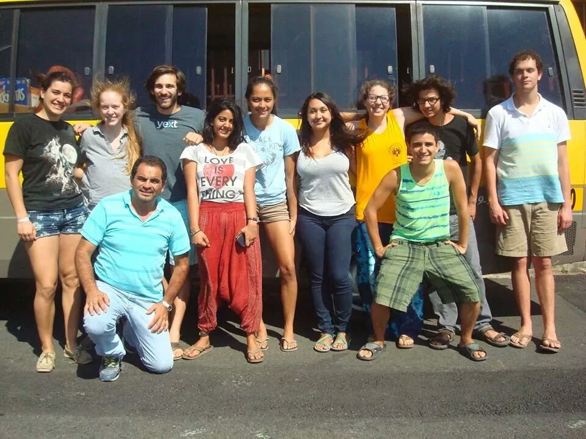

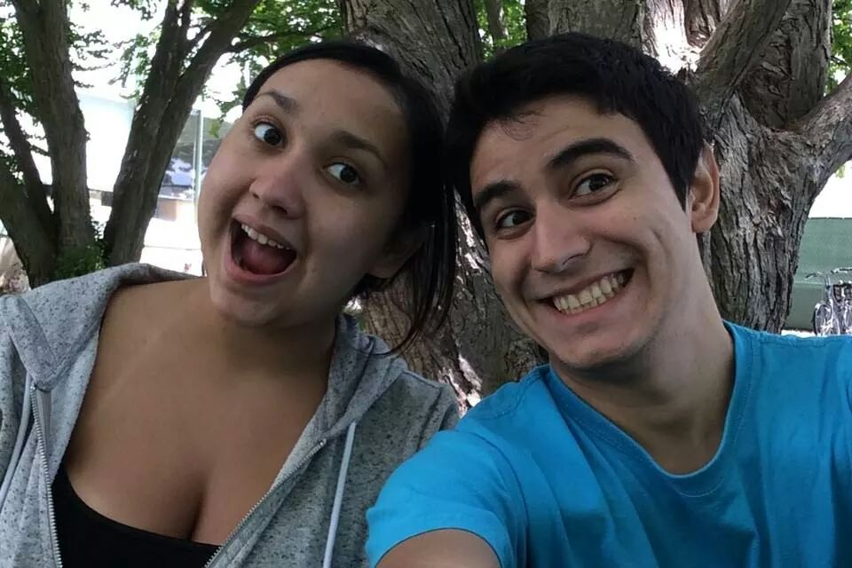
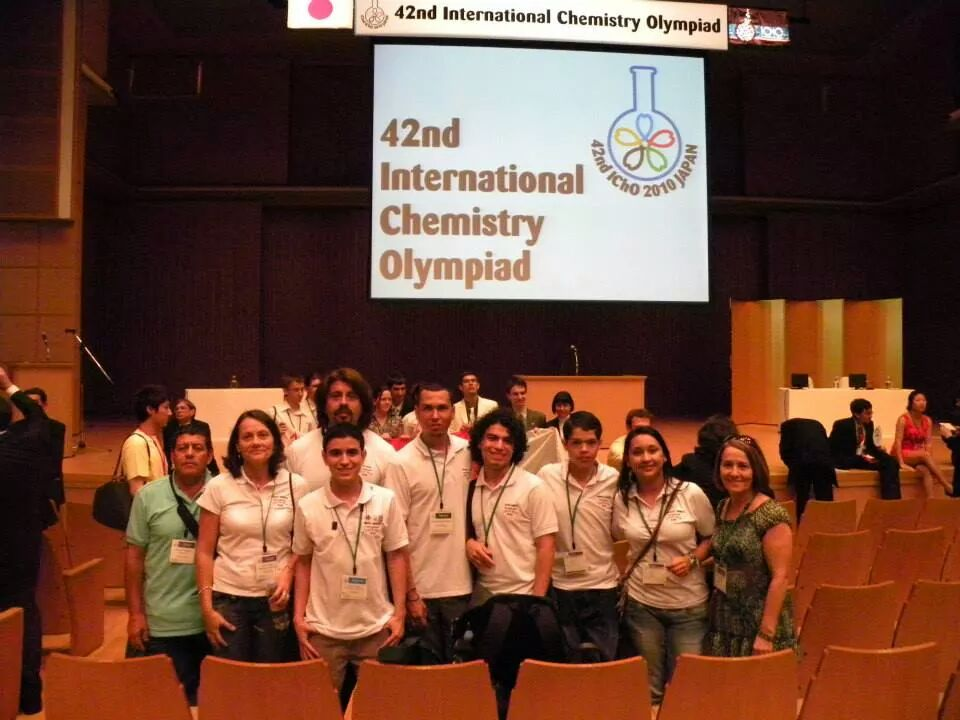
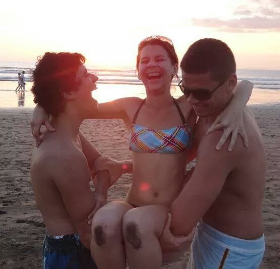

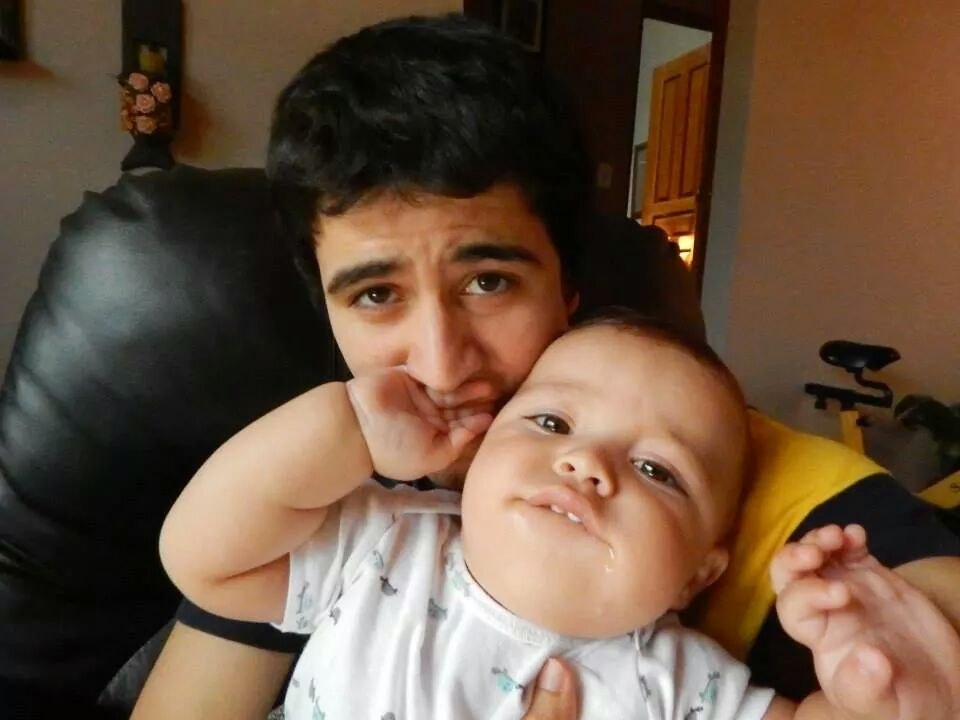
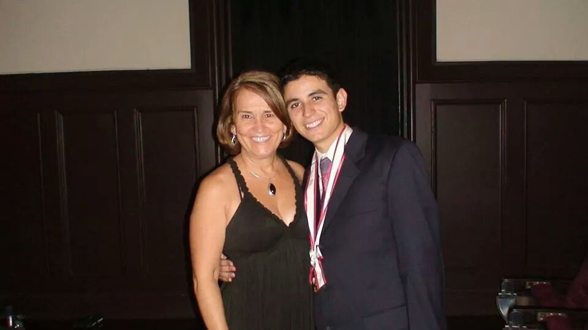